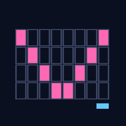

SugarVterm
In-memory virtual terminal emulator

Feed an ANSI byte stream in, query a cell grid, cursor and mode state out, without ever spawning a real terminal. sugar-vterm is the in-memory virtual terminal of the SugarCraft ecosystem. It is built on a Paul Williams VT500 state machine shared with sugar-ansi-parser, and it mirrors the design of charmbracelet/x/vt.
Install
composer require sugarcraft/sugar-vtermRequires PHP ^8.3. The library has no runtime dependency on a real terminal, a PTY or an event loop for the synchronous API.
Quickstart
use SugarCraft\Vterm\Terminal\Terminal;
$term = Terminal::new(cols: 80, rows: 24);
$term->feed("\x1b[1;31mHello\x1b[0m world");
$screen = $term->screen();
$screen->cell(0, 0)->grapheme; // 'H'
$screen->cell(0, 0)->sgr()->bold; // true (sgr() never null; the $sgr property is ?Sgr — null on the renderer path)
$screen->cell(0, 0)->foreground(); // a Color (kind 1 = Indexed16, value 1 — 16-color red)
$term->feed("\x1b]2;Demo\x07");
$term->windowTitle(); // 'Demo'
$term->feed("\x1b[?1049h");
$term->isAltScreen(); // trueThe stream is parsed incrementally, so a sequence split across two feed() calls is handled correctly. The runnable version of a feed-and-inspect flow is examples/feed-and-screenshot.php.
Concepts
A terminal program writes bytes. The emulator reads them the way a real terminal would and keeps the result as state: a grid of cells, a cursor, a set of modes (alternate screen, mouse reporting, bracketed paste, synchronized output, auto-wrap), a window title and a scrollback ring of rows that scrolled off the top. Querying that state is cheap and synchronous, and nothing is rendered until you ask for it.
Two classes share the name. SugarCraft\Vterm\Terminal\Terminal is the full emulator, with alternate screen, scrollback, OSC dispatch and the complete mode set. The root SugarCraft\Vterm\Terminal is a lightweight emulator that produces Snapshot value objects for candy-vcr's renderer. The examples in this page use the full emulator unless they say otherwise.
Common tasks
Assert on the rendered grid instead of raw bytes. Drive a TUI's view() through the emulator and check the cells it actually painted:
use SugarCraft\Vterm\Terminal\Terminal;
$term = Terminal::new(cols: 20, rows: 3);
$term->feed($app->view());
$cell = $term->screen()->cell(0, 0);
assert($cell->grapheme === 'S');
assert($term->cursor()->row === 0);Read a row as plain text. lines() yields each row's text, and linesWithHistory() includes the scrollback above it:
$term = Terminal::new(cols: 40, rows: 8);
$term->feed("\x1b[1;1Hstatus: ok");
foreach ($term->screen()->lines() as $row => $line) {
echo "$row: $line\n";
}Keep a scrollback history. Scrolled-off rows are kept in a ring buffer, and withScrollbackSize() returns a terminal with a different capacity:
$term = Terminal::new(cols: 80, rows: 24)->withScrollbackSize(5000);
$term->feed(str_repeat("line\r\n", 300));
$history = $term->screen()->scrollback();Feed captured output safely. Text captured from a pipe or a file has bare LF line endings, which the emulator treats as a cursor move without a carriage return. feedCaptured() normalizes them first:
$term = Terminal::new(cols: 80, rows: 24);
$term->feedCaptured(file_get_contents('session.log'));Read the state a program set. Title, cursor, modes and palette are all bare accessors on the terminal:
$term->feed("\x1b]2;build #42\x07\x1b[?25l\x1b[?2004h");
$title = $term->windowTitleSanitized(); // 'build #42', control bytes stripped
$cursorShown = $term->mode()->cursorVisible; // false
$pasteWrapped = $term->mode()->bracketedPaste; // trueWhat's in the box
src/Parser/ holds the handler bridges only. Handles partial input across feed() calls and CSI subparameters (: separator per VT500 spec).?12 gate.Cell::$combining, so composed graphemes render in a single column.Screen::scrollback(), resize it with Terminal::withScrollbackSize(), and erase it with CSI 3 J.Use it for
- Snapshot tests. Drive any TUI's
view()through SugarVterm and assert on cell-grid state instead of raw byte strings. - Recording and replay. Capture
feed()input and replay it deterministically. - Headless SSH sessions.
sugar-ssh-serveris pairable: it can route session bytes intofeed()to run TUIs without a real PTY, but no integration ships in either package. The wiring is yours to write.
API reference
| Class | Method | Description |
|---|---|---|
| Terminal | new(cols, rows, scrollbackSize, buffer, cursor, mode, onFocusEvent) | Create a virtual terminal. The Terminal::create() factory is deprecated: it accepts no scrollbackSize |
| Terminal | feed(bytes), feedCaptured(bytes) | Feed ANSI bytes to the terminal. feedCaptured() normalizes bare LF to CRLF first |
| Terminal | flush() | Drains the parser's pending state |
| Terminal | screen(), cellAt(row, col), rowCells(row) | The current cell grid, and cell or row access by position |
| Terminal | cursor(), isWrapPending() | Cursor position and the pending-wrap flag |
| Terminal | mode() | Terminal mode state (cursor visibility, mouse, bracketed paste, auto-wrap and more) |
| Terminal | windowTitle(), windowTitleSanitized() | The OSC title, verbatim, or with control bytes stripped |
| Terminal | palette(), clipboardEvents(), focusEvents(), bells() | Palette entries set by OSC 4, OSC 52 events, focus events and the bell count |
| Terminal | replies(), replyOverflowCount() | Responses the emulator produced for queries, and how many were dropped at the cap |
| Terminal | resize(cols, rows), cols(), rows() | Change the grid size and read it back |
| Terminal | withScrollbackSize(int), withCellPixels(int $widthPx, int $heightPx) | New terminal with a different scrollback capacity (at least 1), or with a cell pixel size |
| Terminal | enableAltScreen(), disableAltScreen(), isAltScreen() | Alternate-screen control. The lightweight root Terminal throws \LogicException for the first two |
| Screen | cell(row, col) | The cell at a position. Out-of-bounds coordinates return the empty cell |
| Screen | lines(), linesWithHistory() | Each row's text, optionally with the scrollback above it |
| Screen | scrollback(), diff(Screen $other) | The scrollback ring, and a cell-level diff against another screen |
| Scrollback | push(), all(), at(), count(), clear(), maxSize() | The ring of scrolled-off rows |
| Cell | grapheme, sgr(), combining, foreground(), background() | Cell content, style and combining marks. sgr() always returns an Sgr, while the raw $sgr property is ?Sgr |
| Cursor | row, col, withRow(), withCol(), at(), withVisible(), hidden() | Cursor position and visibility, with immutable updates |
| Mode | cursorVisible, bracketedPaste, mouseSgr, isMouseReporting(), withAutoWrap(), withAltScreen(), withSyncUpdate() | Public mode flags, with immutable with*() updates and mouse-encoding helpers |
| Sgr | underlineStyle, withUnderlineStyle(UnderlineStyle) | SGR underline style (None, Single, Double, Curly, Dotted, Dashed), mapped from CSI 4:0 to 4:5 |
| Snapshot | Snapshot::of(Terminal $t, float $time = 0.0), equals(), equalsWithTime() | A frozen frame from the lightweight root Terminal, used by candy-vcr |
| Theme | defaultPalette(), tokyoNight(), dracula(), solarizedDark(), tokyoNightLight(), tokyoNightStorm() | 256-color palette with default foreground and background, and named factories |
| Themes | all(), v1() | The bundled theme catalog, and the first-release subset |
| Hyperlink | Hyperlink value object | OSC 8 target and id, recorded per cell |
Only methods declared in sugar-vterm/src, or inherited from a parent declared there, are listed. A type that extends a class outside that tree, such as \RuntimeException, does not show the methods of that class.
SugarCraft\Vterm
Cell final readonly class
A single cell in the terminal grid — the one Cell for BOTH engines.
| Method | Summary |
|---|---|
__construct(string $char = ' ', public int $fg = 7, public int $bg = 0, public int $attrs = 0, public ?Sgr $sgr = null, public ?int $fgTruecolor = null, public ?int $bgTruecolor = null, public Rendition $rendition = Rendition::None, public bool $continuation = false, public ?Hyperlink $hyperlink = null, public string $combining = '', ?string $grapheme = null) | |
static empty(): self | The shared empty cell — one memoised instance per process. |
static continuation(self $prev): self | Second cell of a wide character — carries no grapheme, marks continuation, and inherits the leading cell's full rendition so the phantom column paints with the same colours/attributes/line state. |
withFg(int $c): self | |
withBg(int $c): self | |
withAttrs(int $flags): self | |
withFgTruecolor(?int $rgb): self | Foreground as an exact 24-bit packed value (or null when not truecolour). |
withBgTruecolor(?int $rgb): self | Background as an exact 24-bit packed value (or null when not truecolour). |
withRendition(Rendition $rendition): self | |
withCombining(string $combining): self | Return a new Cell with additional combining marks appended, capped at MAX_COMBINING_PER_CELL marks per cell: once the ceiling is reached the overflow marks are silently dropped (the appended burst is truncated to whatever budget remains), so a hostile mark flood can never grow a cell unboundedly. The FIRST marks are always the retained ones. Mirrors charmbracelet/x/vt Cell::WithCombining plus the xterm per-cell combining-limit idea. |
static codepoints(string $text): array | The Unicode codepoints of $text as an array (empty string = none). Shared counting primitive for the per-cell combining ceiling. |
static codepointCount(string $text): int | Number of Unicode codepoints in $text — codepoints() sized. |
sgr(): Sgr | |
foreground(): ?Color | |
background(): ?Color | |
fgRgb(): ?array | Exact 24-bit foreground as [r, g, b], from either the renderer's $fgTruecolor slot or an emulator SGR carrying a kind-3 Color. Null when the foreground is a palette/default colour — this is the representation-agnostic truecolour exposure the renderer path previously lacked. |
bgRgb(): ?array | Exact 24-bit background as [r, g, b] — the fgRgb() twin for the background colour. |
colorSgr(): string | Re-emit the cell's colours as an SGR sequence — the cell→SGR direction that makes a stored truecolour value recoverable as bytes (the round-trip the parity work pinned; image rasterizers may consume it in future). Emits 38;2;R;G;B/48;2;R;G;B for a truecolour slot and 38;5;n/ 48;5;n for a palette slot; a default (unset) colour contributes nothing. Returns '' when neither colour is set. The caller wraps this in no extra CSI m — the string is already a complete ESC [ … m. |
equals(self $other): bool |
Cursor final readonly class
Cursor state for the vcr renderer path.
| Method | Summary |
|---|---|
__construct(public int $row = 0, public int $col = 0, public int $shape = 0, public bool $visible = true) | |
at(int $row, int $col): self | |
withShape(int $shape): self | |
hidden(): self | |
shown(): self | |
equals(self $other): bool |
CursorShape enum
DECSCUSR cursor shape values — CSI Ps SP q.
Cases: BlinkingBlock · SteadyBlock · BlinkingUnderline · SteadyUnderline · BlinkingBar · SteadyBar
PHP also provides cases(), from() and tryFrom().
| Method | Summary |
|---|---|
static fromInt(int $shape): self | |
toInt(): int | Return the raw int value for storage in Cursor::$shape. |
Rendition enum
Per-line width/height rendition carried by a Cell.
Cases: None · DoubleTop · DoubleBottom · DoubleWidth
PHP also provides cases(), from() and tryFrom().
| Method | Summary |
|---|---|
isDoubleHeight(): bool | True when the rendition draws the line taller than one row (either DECDHL half). |
Snapshot final readonly class
Frozen frame from the terminal emulator.
| Method | Summary |
|---|---|
__construct(public Buffer $grid, public Cursor $cursor, public float $time, public int $revision = 0) | |
static of(Terminal $t, float $time = 0.0): self | Capture a frozen frame from a live terminal: the grid is deep-copied so the Snapshot cannot retro-mutate as the terminal keeps consuming. |
equals(self $other): bool | |
equalsWithTime(self $other): bool | Compare snapshots including time. Used when exact frame reproducibility at specific timestamps matters. |
Terminal final class
Public terminal surface for the vcr renderer path.
| Method | Summary |
|---|---|
__construct(public readonly int $cols, public readonly int $rows, Buffer $grid, Cursor $cursor, Parser $parser, CsiHandlerImpl $csi, PenForwardingOscHandler $osc, ?Theme $theme = null) | |
static new(int $cols = 80, int $rows = 24, ?Theme $theme = null): self | |
theme(): Theme | |
feed(string $bytes): self | Consume bytes. MUTATES this terminal in place and returns $this for chaining — it does not produce a new instance (frames are frozen by self::snapshot(), which deep-copies the grid at capture). |
feedCaptured(string $bytes): self | Feed captured program output: every newline is expanded to \r\n before the bytes reach self::feed(), applying the README's "Captured-stream gotcha (ONLCR)" normalisation for you. Existing \r\n pairs and lone \r are collapsed to one break first, so a capture with mixed terminators lands consistently. The transform is idempotent — already-CRLF bytes pass through untouched — which makes it safe over streams a producer may have pre-expanded. |
flush(): void | Force any in-flight string sequence (OSC/DCS) to dispatch with its current payload and reset the parser to ground. |
enableAltScreen(): never | Alt screen (DEC 1049) belongs to the full emulator path; the vcr renderer has no screen-swap machinery. These parity stubs exist so consumers written against both entry points fail loudly rather than discovering the asymmetry via a silent method-not-found. |
disableAltScreen(): never | Counterpart of self::enableAltScreen() — parity stub only. |
snapshot(float $time = 0.0): Snapshot | Freeze the current frame: the grid is deep-copied (clone) so the Snapshot is unaffected by any later self::feed(), and the terminal's feed revision rides along for cheap change detection. |
revision(): int | Monotonic write counter: bumped once per self::feed() and self::flush() call. Two snapshots with equal revision and equal grid are provably the same frame without a deep compare — for feeds and flushes: a direct self::grid() mutation changes the frame without bumping this counter. |
cursor(): Cursor | |
isWrapPending(): bool | Deferred-wrap (phantom-cell) state — mirrors the emulator's \SugarCraft\Vterm\Terminal\Terminal::isWrapPending(). |
grid(): Buffer | The LIVE mutable grid — a borrow, not a snapshot. It is the very Buffer the parser writes into: callers that mutate it directly (put()/fillRow()/shift ops) BYPASS the write bookkeeping — such a change is visible to every later grid()/cursor() read but does NOT bump self::revision() and does not move the cursor. Take a self::snapshot() for a frozen copy. (The name predates this contract; a rename to mutableGrid() would break every consumer, so the contract is documented here — Phase 5 may upgrade.) |
windowTitle(): string | |
windowTitleSanitized(): string | The last OSC title with control bytes neutralized — the safe form for display or onward propagation (OscHandler::sanitizeControl()). self::windowTitle() keeps the stored-verbatim contract. |
Theme final class
Terminal theme with 256-color palette and default fg/bg.
| Method | Summary |
|---|---|
__construct(public readonly int $defaultFg = 7, public readonly int $defaultBg = 0, ?array $palette = null) | |
static defaultPalette(): array | Canonical 0..255 xterm default palette (E742): the sixteen hand-tuned base colours followed by the shared 16..255 extension. The extension is keyed by ABSOLUTE index, so the + union lands every cube and grayscale slot at its true xterm position — a positional (0..215) cube would shift the whole region by −16 and shadow its first sixteen entries under the base block. |
color(int $index): int | |
static tokyoNight(): self | |
static dracula(): self | |
static solarizedDark(): self | |
static tokyoNightLight(): self | Tokyo Night Light theme variant. |
static tokyoNightStorm(): self | Tokyo Night Storm theme variant. |
static fgIndex(int $slot): int | Given an ANSI slot 0-15, return the corresponding 256-color index for foreground. |
static bgIndex(int $slot): int | Given an ANSI slot 0-15, return the corresponding 256-color index for background. |
static rgb(int $index): array | Given a 256-color index, return [r, g, b]. |
Themes final class
Catalog of available terminal themes.
| Method | Summary |
|---|---|
static all(): array | Returns the catalog of all available themes: name => Theme. |
static v1(): array | Returns the v1-ready themes (TokyoNight first). |
SugarCraft\Vterm\Buffer
Buffer final class
The one 2D cell grid — shared by the emulator (\SugarCraft\Vterm\Handler\ScreenHandler) and the vcr renderer path (\SugarCraft\Vterm\Terminal).
| Method | Summary |
|---|---|
__construct(public readonly int $cols, public readonly int $rows) | |
dirtyRegion(): array | |
resize(int $cols, int $rows): self | Resize the grid, preserving existing content. Columns/rows beyond the new bounds are DISCARDED — dropped rows are not fed to the scrollback ring (the emulator's resizeBuffers keeps the ring separately; a resize is a viewport change, not a scroll). The whole new grid is marked dirty so a delta renderer repaints every cell instead of trusting stale coordinates. |
widenPairSpan(int $row, int $start, int $end): array | Widen the closed column span [start, end] on $row so it never cuts a wide glyph in half: a span starting on a pair's continuation pulls left over its base; a span ending on a base whose tail sits one column right extends over the tail. This is THE erase-widening rule shared by both engines (vterm-13, ECMA-48/VT510 "double-width characters are treated as one unit" under ED/EL/ECH and the pair-atomic DCH/ICH shifts); the print path's outside-half clearing (ScreenHandler::eraseWidePartners) stays its own loop because it acts per written column rather than on a span. |
clear(): self | A fresh empty grid of the same dimensions; this instance is untouched. |
cell(int $row, int $col): Cell | |
put(int $row, int $col, Cell $cell): void | Write a cell at the given position and extend the dirty bounding box. Out-of-bounds coordinates are ignored silently. |
insertRows(int $count, int $from = 0, ?int $top = null, ?int $bottom = null): void | Insert $count blank rows at row $from, pushing the rows below it DOWN within the region [$top, $bottom]; nothing above $from moves and content overflowing $bottom is dropped (region-internal edit — the callers that model scrollback own ring feeding, not the grid). |
deleteRows(int $count, int $from = 0, ?int $top = null, ?int $bottom = null): void | Delete $count rows at row $from, pulling the rows below it UP within the region [$top, $bottom] and leaving blanks at the region bottom. |
each(): \Generator | Iterate all cells in row-major order. |
equals(self $other): bool | Cell-for-cell equality over the whole grid (dimensions must match). |
row(int $row): array | Read a whole row by value. |
copy(): array | Copy the entire grid for snapshotting. |
SugarCraft\Vterm\Charset
Charsets final class
Character-set designation tables (SCS) and the GL/GR translation.
| Method | Summary |
|---|---|
static translate(string $charset, string $rune): string | Translate one rune through a designated charset. |
SugarCraft\Vterm\Color
Color final readonly class
Terminal color value object.
| Method | Summary |
|---|---|
static default(): self | Default terminal color (reset). |
static indexed16(int $index): self | 16-color palette (0–15). |
static indexed256(int $index): self | 256-color palette (0–255). |
static truecolor(int $r, int $g, int $b): self | 24-bit RGB. |
static fromInt(int $kind, int $value): self | |
red(): int | |
green(): int | |
blue(): int | |
equals(self $other): bool | |
static equalsOrBothNull(?self $a, ?self $b): bool | Null-safe colour comparison: two colours match iff both are unset or both are set and equal. The single home for the pattern formerly copy-pasted across Sgr::equals() and Cell::sgrEquals(). Color is final readonly, so this static helper adds no inheritance surface. |
SugarCraft\Vterm\Cursor
Cursor final readonly class
Cursor state snapshot.
| Method | Summary |
|---|---|
__construct(public int $row = 0, public int $col = 0, public bool $visible = true, public int $shape = 0, public ?int $savedRow = null, public ?int $savedCol = null) | |
withRow(int $row): self | |
withCol(int $col): self | |
at(int $row, int $col): self | Position alias: row and column in one call. The canonical primitive pair is withRow()/withCol(); \SugarCraft\Vterm\Cursor::at() (the root renderer VO) carries the same verb so callers move between the two classes without renaming (vterm-09, additive-only — behaviour is identical to chaining the pair). |
withVisible(bool $v): self | |
hidden(): self | Visibility alias for withVisible(false); mirrors \SugarCraft\Vterm\Cursor::hidden(). |
shown(): self | Visibility alias for withVisible(true); mirrors \SugarCraft\Vterm\Cursor::shown(). |
withShape(int $shape): self | |
save(): self | |
restore(): self | |
equals(self $other): bool |
SugarCraft\Vterm\Handler
CursorHandler final class
Applies CSI cursor-movement sequences to a Cursor.
| Method | Summary |
|---|---|
apply(int $final, array $params, Cursor $cursor, Buffer $buffer, int $scrollTop = 0, int $scrollBottom = -1, bool $originMode = false): Cursor |
EraseHandler final class
Erase / delete / insert handlers — EL, ED, ECH, DCH, ICH.
| Method | Summary |
|---|---|
apply(int $final, array $params, Buffer $buffer, Cursor $cursor, ?Sgr $sgr = null, ?array &$pending = null): void | |
blankCell(?Sgr $sgr): Cell | The BCE blank: a space carrying ONLY the pen's background colour, foreground/attributes default; no background set → plain empty cell. Shared by ED/EL/ECH (fillRow), the DCH/ICH shift gaps, and the wide-partner orphan erase in ScreenHandler::eraseWidePartners(), matching xterm's application of the erase colour to those operations too. |
ModeHandler final class
Applies DEC private mode set/reset (CSI ?N h / CSI ?N l) to a ScreenHandler.
| Method | Summary |
|---|---|
apply(array $params, bool $set, ScreenHandler $handler): void |
OscHandler final class
Routes OSC dispatch payloads to the right ScreenHandler slot.
| Method | Summary |
|---|---|
apply(string $data, ScreenHandler $h): void | |
static sanitizeControl(string $raw): string | Neutralize control bytes in a stored OSC payload for display or onward propagation — the escape hatch referenced by the SECURITY NOTE above. The parser already swallows ESC, NUL, TAB and CR/LF while collecting OSC strings, but DEL (0x7F) and C1 codepoints (U+0080-U+009F — whose raw bytes include the 8-bit OSC introducer 0x9D) survive verbatim into titles and payloads, and a title can also arrive via \SugarCraft\Vterm\Terminal\Terminal::withWindowTitle() without passing through any parser at all. This strips U+0000-U+001F and U+007F-U+009F; everything else is kept, so the result is always no longer than the input. In byte mode (payload failed UTF-8 validation) bytes 0x80-0x9F are dropped whole — corrupt input is neutralized, not rescued, and lone continuation bytes there are indistinguishable from C1 controls. |
ScreenHandler final class
Default Handler implementation: mutates a Buffer + Cursor + Sgr + Mode triple in response to parser actions.
| Method | Summary |
|---|---|
setSubparams(array $subparams): void | |
__construct(Buffer $buffer, ?Cursor $cursor = null, ?Sgr $sgr = null, ?Mode $mode = null, ?Scrollback $scrollback = null, ?\Closure $onFocusEvent = null) | |
printChar(string $rune): void | |
execute(int $byte): void | |
csiDispatch(int $final, array $params, int $prefix, int $intermediate): void | |
escDispatch(int $final, int $intermediate): void | |
oscDispatch(string $data): void | |
dcsDispatch(int $final, array $params, int $prefix, int $intermediate, string $data): void | |
sosPmApcDispatch(string $kind, string $data): void | |
replyOverflowCount(): int | Number of queued replies evicted by the ring ceilings — the overflow-detection seam for hosts that drain lazily (sugar-vterm-048). |
recordClipboardEvent(array $event): void | Public entry for OSC 52 to record a clipboard event without appending to the property directly (keeps the ring ceiling in one place). |
hardReset(): void | RIS — ESC c, full reset to the power-on state. |
softReset(): void | DECSTR — CSI ! p, soft reset. |
displayAlignmentTest(): void | DECALN — ESC # 8, screen-alignment pattern. |
resizeBuffers(int $cols, int $rows): void | Resize the active Buffer and, when alt-screen state is saved, the saved main Buffer to the new dimensions, preserving content overlap. |
setCursorVisible(bool $visible): void | DEC 25 (DECTCEM) cursor visibility — the ONLY write path for this bit. |
enterAltScreen(): void | Enter the alt screen (DEC 1049 set). Saves the current Buffer + Cursor + Sgr + SCS designations + origin mode and swaps in a fresh blank Buffer of the same size. This is the AUX save slot — the DECSC/CSI s GENERAL slot is never consumed by it (xterm keeps the two independent; less saving with ESC 7 before entering alt must still find its rendition on the way back). The companions only PARK for the duration so the alt screen starts with its own empty slot, matching xterm's per-screen saved cursor. The DECSTBM scroll region rides the same save: the alt screen starts on full margins and a DECSTBM issued inside alt never leaks back to the main screen. |
leaveAltScreen(): void | Leave the alt screen (DEC 1049 reset). Restores the saved Buffer + Cursor + Sgr + SCS + origin mode + DECSTBM region. No-op if not currently in the full-swap (or upgraded-to-full) alt mode. |
enterAltScreenNoSave(): void | Enter the alt screen without saving cursor or SGR (DECSET 47, 1047). Only swaps the buffer — cursor visibility is preserved. Idempotent within the same variant. |
leaveAltScreenNoSave(): void | Leave the alt screen (DECSET 47, 1047 reset). Restores the saved Buffer only. Cursor and SGR are NOT restored (they were not saved). |
enterAltScreenCursorOnly(): void | Enter the alt screen with cursor save only (DECSET 1048). Saves cursor position but NOT buffer or SGR. The buffer is swapped to a fresh blank one and cursor is reset to origin, keeping its DECTCEM visibility and DECSCUSR shape. On exit, only the cursor is restored. |
leaveAltScreenCursorOnly(): void | Leave the alt screen (DECSET 1048 reset). Restores cursor position only. Buffer and SGR are NOT restored (they were not saved). |
__clone(): void | Deep-copy on clone: PHP's default semantics would leave the clone writing THROUGH into the original's grid and scrollback ring, so clone $terminal (the snapshot/rewind idiom every consumer reaches for) silently corrupted the state it was meant to preserve. |
ScrollHandler final class
Vertical scrolling primitives — SU/SD plus IND/RI/NEL.
| Method | Summary |
|---|---|
applyCsi(int $final, array $params, Buffer $buffer, int $scrollTop, int $scrollBottom): void | Apply a scroll CSI (SU = 'S', SD = 'T'). |
index(Buffer $buffer, Cursor $cursor, int $scrollTop, int $scrollBottom): Cursor | IND (index) — move down, scroll up if at the bottom of the region. |
reverseIndex(Buffer $buffer, Cursor $cursor, int $scrollTop, int $scrollBottom): Cursor | RI (reverse index) — move up, scroll down if at the top of the region. |
nextLine(Buffer $buffer, Cursor $cursor, int $scrollTop, int $scrollBottom): Cursor | NEL (next line) — CR + IND. |
insertLines(Buffer $buffer, int $scrollTop, int $scrollBottom, int $from, int $count): void | IL — insert $count blank lines starting at row $from, shifting the rows below it down inside the DECSTBM region [top, bottom]. |
deleteLines(Buffer $buffer, int $scrollTop, int $scrollBottom, int $from, int $count): void | DL — delete $count lines starting at row $from, pulling rows below up inside the DECSTBM region; blanks land at the region bottom. |
scrollUp(Buffer $buffer, int $scrollTop, int $scrollBottom, int $count): void | Scroll the region up by $count rows (SU). |
scrollDown(Buffer $buffer, int $scrollTop, int $scrollBottom, int $count): void | Scroll the region down by $count rows (SD). |
SgrHandler final class
Applies CSI m (Select Graphic Rendition) parameters to an Sgr value.
| Method | Summary |
|---|---|
apply(array $params, Sgr $current, ?array $subparams = null): Sgr | Apply a CSI m parameter list to the current SGR state. |
TabHandler final class
Horizontal tab-stop arithmetic.
| Method | Summary |
|---|---|
static defaults(int $cols): array | Build the default tab-stop set: every 8 columns starting at 8. |
forward(int $col, array $stops, int $cols): int | Move forward to the next tab stop after $col, clamping at the right edge if no stop is set. |
backward(int $col, array $stops): int | Move backward to the previous tab stop before $col, clamping at 0. |
applyCsi(int $final, array $params, int $col, array $stops, int $cols): int | Apply CSI I (CHT) or CSI Z (CBT) — repeat forward/backward N times. |
clear(int $mode, int $col, array $stops): array | TBC (CSI g): clear tab stops. |
SugarCraft\Vterm\Hyperlink
Hyperlink final readonly class
OSC 8 hyperlink metadata attached to cells.
| Method | Summary |
|---|---|
__construct(public string $id = '', public string $uri = '') | |
static fromRaw(string $id, string $uri): self | |
equals(self $other): bool |
SugarCraft\Vterm\Mode
Mode final readonly class
DEC mode flags snapshot.
| Method | Summary |
|---|---|
__construct(public bool $cursorVisible = true, public bool $bracketedPaste = false, public bool $mouseUtf8 = false, public bool $mouseSgr = false, public bool $mouseUrxvt = false, public bool $mouseAny = false, public bool $mouseHighlights = false, public bool $mouseCellMotion = false, public bool $syncUpdate = false, public bool $mouseExtended = false, public int $altScreenVariant = self::ALT_NONE, public bool $autoWrap = true, public bool $originMode = false, public int $cursorShape = 0, public bool $reportFocusEvents = false) | |
withAltScreen(bool $v): self | |
withAltScreenVariant(int $variant): self | Set the alt screen variant directly (modes 47, 1047, 1048, 1049). |
isAltScreen(): bool | Returns true if any alt screen variant is active (variant != ALT_NONE). |
withCursorVisible(bool $v): self | |
withMouseUtf8(bool $v): self | DEC 1005 — UTF-8 coordinate form flag (independent, vterm-12). |
withMouseSgr(bool $v): self | DEC 1006 — SGR coordinate form flag (independent, vterm-12). |
withMouseUrxvt(bool $v): self | DEC 1015 — urxvt coordinate form flag (independent, vterm-12). |
effectiveMouseEncoding(): MouseEncoding | The encoder a report emitted NOW would use (DEC 1005/1006/1015). |
withMouseHighlights(bool $v): self | |
withMouseAny(bool $v): self | |
withMouseCellMotion(bool $v): self | |
withMouseExtended(bool $v): self | |
isMouseReporting(): bool | True while ANY mouse tracking mode is armed (DEC 1000/1001/1002/1003). |
withBracketedPaste(bool $v): self | |
withSyncUpdate(bool $v): self | |
withAutoWrap(bool $v): self | Set DECAWM auto-wrap mode. |
withOriginMode(bool $v): self | Set DECOM origin mode. |
withCursorShape(int $v): self | Set DECSCUSR cursor shape. |
withReportFocusEvents(bool $v): self | Set focus event reporting mode. |
equals(self $other): bool |
MouseEncoding enum
Mouse report coordinate encoding selected by the DEC 100x/101x family.
Cases: Default · Utf8 · Sgr · Urxvt
PHP also provides cases(), from() and tryFrom().
SugarCraft\Vterm\Msg
FocusInMsg final readonly class
Focus-in event — terminal received focus (CSI I).
FocusOutMsg final readonly class
Focus-out event — terminal lost focus (CSI O).
SugarCraft\Vterm\Parser
CsiHandlerImpl final class
CSI handler for the vcr renderer path.
| Method | Summary |
|---|---|
__construct(private Buffer $grid, private Cursor $cursor, private Theme $theme) | |
grid(): Buffer | |
cursor(): Cursor | |
wrapPending(): bool | Deferred-wrap (phantom-cell) state — mirrors the emulator's Terminal\Terminal::isWrapPending(). |
setHyperlink(?Hyperlink $hyperlink): void | Set the pen's active OSC 8 link ($hyperlink); null closes it. Called by PenForwardingOscHandler on every OSC 8 dispatch. |
hyperlink(): ?Hyperlink | The pen's currently active OSC 8 link, or null when none is open. |
setSubparams(array $subparams): void | Receive the ECMA-48 sub-parameter continuation flags for the parameter list about to be dispatched. RendererHandler — the renderer path's push-reachable \SugarCraft\AnsiParser\Parser\SubparamsAwareHandler sink — forwards the parser's push here so SGR can tell CSI 4 : 3 m (curly underline) from CSI 4 ; 3 m (underline + italic). Never pushed (direct construction, or the raw sugar-ansi-parser HandlerAdapter) leaves $subparams null and SGR keeps the flat-list behaviour. |
printable(string $grapheme): void | |
cuu(int $count = 1): void | |
cud(int $count = 1): void | |
cuf(int $count = 1): void | |
cub(int $count = 1): void | |
cup(int $row, int $col): void | |
hvp(int $row, int $col): void | |
sgr(array $params): void | |
gridRows(): int | |
gridCols(): int | |
ed(int $mode = 0): void | |
el(int $mode = 0): void | |
decset(int $mode, int $prefix = 0): void | |
decrst(int $mode, int $prefix = 0): void | |
decstbm(int $top, int $bottom): void | |
tbc(int $mode = 0): void | |
cbt(int $count = 1): void | |
cht(int $count = 1): void | |
cr(): void | CR — carriage return: move cursor to column 0 (row unchanged). Column motion disarms the deferred wrap (xterm carriage_return). |
lf(): void | LF — line feed: advance cursor down one row, scrolling the scroll region if the cursor is at scrollBottom. Handles VT (0x0B) and FF (0x0C) the same way. Vertical motion consumes the phantom cell (emulator index()). |
su(int $count = 1): void | SU — Scroll Up (CSI S). Scroll the scroll region up $count lines, introducing blank lines at the bottom. Cursor position unchanged. |
sd(int $count = 1): void | SD — Scroll Down (CSI T). Scroll the scroll region down $count lines, introducing blank lines at the top. Cursor position unchanged. |
il(int $count = 1): void | IL — Insert Line (CSI L). Insert $count blank lines at the cursor row, shifting existing lines down within the scroll region. No-op when the cursor sits outside the scroll region. On success the cursor homes to column 0 on its row — matching the emulator's insertLines() (VT500 §IL "cursor to home position"; charm keeps the phantom armed against the OLD margin, so column-home disarms it — see ScreenHandler::insertLines). |
dl(int $count = 1): void | DL — Delete Line (CSI M). Delete $count lines at the cursor row, shifting lines below up within the scroll region. No-op when the cursor sits outside the scroll region. Cursor homes to column 0 like il(). (The emulator additionally pushes deleted rows into its scrollback when the region spans the screen; the renderer has no scrollback, so its visible-grid edit is identical.) |
ich(int $count = 1): void | ICH — Insert Character (CSI @). Insert $count blank cells at the cursor, shifting the rest of the line right; cells pushed past the right edge are dropped. Cursor position unchanged. |
dch(int $count = 1): void | DCH — Delete Character (CSI P). Delete $count cells at the cursor, shifting the rest of the line left and blanking the vacated right edge. Cursor position unchanged. |
rep(int $count = 1): void | REP — Repeat (CSI b). Replay the last printed graphic grapheme $count times, bounded to one screen-full: a REPeat never legitimately writes more than Buffer capacity ($cols * $rows) printables, so CSI 65535 b on an 80x24 grid costs at most 1920 writes. The ceiling bounds hostile work; an unbounded replay would keep scrolling the same screen rewrite after rewrite. No-op when nothing printable has been emitted yet. |
scosc(): void | SCOSC — SCO Save Cursor (CSI s). Remembers the cursor position AND the active pen: the emulator's GENERAL DECSC slot restores position + rendition + designations (w4-vt), and the renderer's expressive range for that snapshot is the fg/bg/attrs triple. |
scorc(): void | SCORC — SCO Restore Cursor (CSI u). Restore the cursor (and pen) saved by SCOSC; no-op when nothing was saved. A position change on the way back disarms the phantom cell (emulator parity: ScreenHandler routes CSI s/CSI u to saveCursor()/restoreCursor() directly, DECRC clearing the wrap flag the same way graphic-position moves do). When the slot is empty (no prior SCOSC) the cursor STAYS PUT here — the emulator's Cursor::restore() does the same (savedRow ?? row); xterm homes to 0,0 instead, a deliberate and parity-safe divergence on both engines. |
escIndex(): void | ESC D — IND (index): the vertical twin of LF. Route to lf(), which shares the emulator's index() behaviour (consume the phantom cell, scroll the region at its bottom edge). |
escNextLine(): void | ESC E — NEL (next line): carriage return + index. Mirrors the emulator's \SugarCraft\Vterm\Handler\ScreenHandler::nextLine(). |
escReverseIndex(): void | ESC M — RI (reverse index): up one line, scrolling the region down when already at the top. Vertical-only motion: like the emulator, the phantom cell is deliberately left armed here. |
escSetTabStop(): void | ESC H — HTS (hard tab stop). Sets a stop at the cursor column, gated to the grid width exactly like the emulator's \SugarCraft\Vterm\Handler\ScreenHandler::setTabStop(); the renderer shares its TabHandler model (see tbc()). |
escSaveCursor(): void | ESC 7 — DECSC (save cursor). Same GENERAL slot as SCO CSI s (scosc()): position + pen triple + truecolour. The renderer stores no charsets/DECOM, so its snapshot is the expressive-range subset the emulator's save also collapses to under grid normalisation. |
escRestoreCursor(): void | ESC 8 — DECRC (restore cursor); twin of escSaveCursor(). |
escResetToInitialState(): void | ESC c — RIS (hard reset). Clears the grid, restores the cursor to its power-on value object (home + DECTCEM visible + default shape — the emulator's hardReset() builds a new Cursor(); homing with Cursor::at() kept a CSI ? 25 l hide across the reset), drops the pen (palette + truecolour + the OSC 8 link + the DECSC slot) and the REP memory, restores the full-page scroll region and re-enables DECAWM — the renderer's expressive-range match for the emulator's \SugarCraft\Vterm\Handler\ScreenHandler::hardReset(). Scrollback/alt-screen/charsets have no renderer counterpart. Tab stops are rebuilt to the defaults (emulator hardReset parity, ScreenHandler::defaults route). Clearing $lastPrintable is renderer-local hygiene: the emulator never dispatches REP at all, so post-RIS CSI b printing nothing is the agreement xterm/VT510 full-reset semantics demand ("no graphic was the last printable"). |
escLineRendition(int $final): void | ESC # {3,4,5,6} — the DEC "hash" line-rendition family. |
PenForwardingOscHandler final class
Pen-forwarding OSC handler for the vcr renderer path.
| Method | Summary |
|---|---|
__construct(private readonly ?CsiHandlerImpl $sink = null) | |
title(string $title): void | |
hyperlink(string $uri, string $id): void | OSC 8 open/close. The sugar-ansi-parser parser contract is that an empty $uri CLOSES the current link (xterm ctlseqs: OSC 8 ; params ; URI, "an empty URI ... terminates the current hyperlink"), so the pen (and every cell printed afterwards) returns to unlinked. |
lastTitle(): string | |
currentHyperlink(): ?Hyperlink | The link currently open on this handler, or null after a close. |
RendererHandler final class
Renderer-path Handler that finally routes ESC bytes to the grid.
| Method | Summary |
|---|---|
__construct(private readonly CsiHandlerImpl $csi, private readonly HandlerAdapter $delegate) | |
setSubparams(array $subparams): void | The parser pushes the ECMA-48 colon continuation flags here — this decorator, not the wrapped HandlerAdapter, is the object handed to \SugarCraft\AnsiParser\Parser\Parser::__construct(), so it is the only handler the capability check can see. Forward them down to the concrete CsiHandlerImpl whose sgr() needs them to tell CSI 4 : 3 m (curly underline) from CSI 4 ; 3 m (underline + italic): the parser calls this immediately before the same-call-chain csiDispatch(). |
printChar(string $rune): void | |
execute(int $byte): void | |
csiDispatch(int $final, array $params, int $prefix, int $intermediate): void | |
oscDispatch(string $data): void | |
dcsDispatch(int $final, array $params, int $prefix, int $intermediate, string $data): void | |
sosPmApcDispatch(string $kind, string $data): void | |
escDispatch(int $final, int $intermediate): void | The one event the shared adapter dropped on the floor. |
SugarCraft\Vterm\Screen
Screen final readonly class
Readonly snapshot of the terminal grid, optionally carrying the scrollback ring that holds the scrolled-off rows.
| Method | Summary |
|---|---|
__construct(private array $grid, public readonly int $cols, public readonly int $rows, private ?Scrollback $scrollback = null) | |
static fromBuffer(Buffer $buf, ?Scrollback $scrollback = null): self | Build a Screen snapshot from the current Buffer state. |
scrollback(): ?Scrollback | Return the scrollback buffer holding rows that have scrolled off-screen. Null when this screen was composed via self::fromBuffer() without a ring; the full Terminal\Terminal::screen() path always wires one. |
cell(int $row, int $col): Cell | |
diff(self $other): array | Compare two screens and return only the changed cells. |
lines(): \Generator | Iterate rows as grapheme strings (continuation cells skipped). |
linesWithHistory(): \Generator | Text extraction across the scrollback ring AND the visible screen: rows pushed off the top first (oldest to newest), then every visible line. Keys run 0..n continuously. With no ring attached — or nothing ever scrolled — this yields exactly self::lines(). |
Scrollback final class
Ring buffer that stores rows scrolled off the top of the screen.
| Method | Summary |
|---|---|
__construct(private readonly int $maxSize = 1000) | |
push(array $row): void | Append a row to the buffer. |
all(): \Generator | Iterate the ring from oldest to newest, one row at a time. |
at(int $offset): ?array | Return the row at the given offset from the oldest entry (0 = oldest). |
count(): int | |
clear(): void | Drop every stored row (ED 3 — "clear scrollback", xterm ctlseqs CSI 3 J). The ring keeps its capacity; head/tail/count rewind to a pristine state so subsequent pushes append from the start again. |
maxSize(): int |
SugarCraft\Vterm\Sgr
Sgr final readonly class
Select Graphic Rendition flags — bold, italic, underline, etc.
| Method | Summary |
|---|---|
__construct(public bool $bold = false, public bool $italic = false, public bool $underline = false, public UnderlineStyle $underlineStyle = UnderlineStyle::None, public bool $strikethrough = false, public bool $blink = false, public bool $reverse = false, public bool $dim = false, public bool $hidden = false, public bool $invisible = false, public ?Color $foreground = null, public ?Color $background = null) | |
static empty(): self | |
withBold(bool $v): self | |
withItalic(bool $v): self | |
withUnderline(bool $v): self | |
withUnderlineStyle(UnderlineStyle $style): self | |
withStrikethrough(bool $v): self | |
withBlink(bool $v): self | |
withReverse(bool $v): self | |
withDim(bool $v): self | |
withHidden(bool $v): self | |
withForeground(?Color $c): self | |
withBackground(?Color $c): self | |
equals(self $other): bool |
UnderlineStyle enum
SGR underline style — single, double, curly, dotted, dashed, or none.
Cases: None · Single · Double · Curly · Dotted · Dashed
PHP also provides cases(), from() and tryFrom().
SugarCraft\Vterm\Terminal
Terminal final class
Public terminal facade.
| Method | Summary |
|---|---|
__construct(int $cols, int $rows, ?Buffer $buffer = null, ?Cursor $cursor = null, ?Mode $mode = null, int $scrollbackSize = 1000, ?\Closure $onFocusEvent = null) | |
static new(int $cols = 80, int $rows = 24, ?int $scrollbackSize = null, ?Buffer $buffer = null, ?Cursor $cursor = null, ?Mode $mode = null, ?\Closure $onFocusEvent = null): self | Canonical factory — mirrors the constructor params directly, all optional and defaulted: focus-event wiring and a pre-set DEC mode (or injected buffer/cursor) never require positional fillers. |
static create(int $cols = 80, int $rows = 24): self | |
feed(string $bytes, ?callable $respond = null): void | Drive bytes through the parser. |
feedCaptured(string $bytes, ?callable $respond = null): void | Feed captured program output: every newline is expanded to \r\n before the bytes reach self::feed(), applying the README's "Captured-stream gotcha (ONLCR)" normalisation for you. Existing \r\n pairs and lone \r are collapsed to one break first, so a capture with mixed terminators lands consistently. The transform is idempotent — already-CRLF bytes pass through untouched — which makes it safe over streams a producer may have pre-expanded. The $respond query→reply channel behaves exactly as in self::feed(). |
replies(): array | Drain the queued terminal→host replies (DA1/DA2, DECRPM, CPR, XTWINOPS …) in request order. OSC-sourced requests are NOT in this queue: an OSC 52 read is recorded in the clipboard event log and the palette query forms are ignored — this library never answers them itself, see self::clipboardEvents(). |
replyOverflowCount(): int | Replies evicted by the ring ceilings since construction (sugar-vterm-048): nonzero means answers were dropped before any drain saw them. |
feedAsync(string $bytes): PromiseInterface | Async form of feed(): parse $bytes and resolve with the terminal→host answer bytes this feed produced (plus any earlier ones still queued), concatenated in request order — exactly the byte stream $respond would have received from feed(), delivered as the promise value instead of a callback. |
feedStream(ReadableStreamInterface $input, ?callable $respond = null, ?CancellationToken $cancellation = null): PromiseInterface | Pump a stream of terminal input through the parser as it arrives. |
flush(): void | Force any in-flight string sequence (OSC/DCS/SOS/PM/APC) to dispatch with its current payload and reset to ground. Useful at end-of-stream when you can't wait for a real terminator byte. |
screen(): Screen | Full-screen snapshot. Rebuilds a detached copy of the grid on every call — O(rows × cols) array wrappers (cells are shared readonly objects; the copy separates on write) — so a poll loop that only needs one row should use rowCells() instead. |
cellAt(int $row, int $col): Cell | Read one live cell without rebuilding the screen snapshot. |
rowCells(int $row): array | Read one live row by value without rebuilding the screen snapshot: streaming consumers (site-map diffs, scrollback pumps) never pay the full-screen rebuild of screen(). |
cursor(): Cursor | |
isWrapPending(): bool | True while a DECAWM deferred wrap is armed: a glyph has landed in the last column and the cursor is parked there until the next graphic print consumes it (mirrors xterm _wrapnext / charmbracelet x/vt Emulator.atPhantom). |
mode(): Mode | |
windowTitle(): ?string | |
windowTitleSanitized(): ?string | The window title with control bytes neutralized — the safe form for display or onward propagation (OscHandler::sanitizeControl()). self::windowTitle() keeps the stored-verbatim contract. |
palette(): array | |
clipboardEvents(): array | Clipboard events recorded from OSC 52 sequences — DRAIN semantics. |
focusEvents(): array | Focus events recorded while DECSET 1004 was active (CSI I / CSI O). |
bells(): int | Number of bell characters (BEL 0x07) the stream has produced. |
resize(int $cols, int $rows): void | |
cols(): int | Live grid width, read straight from the handler's buffer — the current value after a self::resize(), not the constructor echo, and without the O(rows × cols) rebuild a screen() costs. |
rows(): int | Live grid height; same direct-read contract as self::cols(). |
__clone(): void | Snapshot clone (w4-vt deep-clone semantics): a fresh Parser starts in Ground, so any in-flight string sequence (partial OSC/DCS payload, partial UTF-8 rune) is intentionally dropped — the clone captures committed state only. ScreenHandler::__clone() deep-copies the mutable Buffer/Scrollback (and the saved alt-state buffer) so the clone can never write through into this terminal's grid. The alt-screen saved slots ride that deep copy. |
withTabStops(array $cols): self | Replace the active tab stops with explicit column indices. |
withScrollbackSize(int $size): self | Return a new Terminal with a different scrollback buffer size. |
withCellPixels(int $widthPx, int $heightPx): self | Return a new Terminal reporting the given nominal cell pixel size in XTWINOPS 14t/16t replies. The emulator renders no font, so the classic 8×16 defaults are advisory; mosaic's probeFontSize() only consumes them as cell/window ratios. |
enableAltScreen(): void | Programmatically enter the alternate screen buffer (DEC 1049 mode). Saves the main screen buffer, cursor, and SGR state. |
disableAltScreen(): void | Programmatically leave the alternate screen buffer. Restores the main screen buffer, cursor, and SGR state. |
isAltScreen(): bool | Returns true if the alternate screen buffer is currently active. |
Configuration and limits
The library reads no environment variables and no configuration file. Its tunables are constructor and with*() arguments, plus hard limits that protect the emulator from hostile streams:
| Option | Type | Default | Effect |
|---|---|---|---|
cols, rows | int | 80, 24 | Grid size, changed later with resize() |
scrollbackSize | int | 1000 rows | Ring capacity for scrolled-off rows, set with withScrollbackSize() |
SugarCraft\Vterm\Terminal::MAX_STRING_BUFFER | bytes | 64 KiB | Cap on one OSC, DCS or APC payload. Excess bytes are dropped |
| Event logs | entries | 1024 | Drop-oldest rings for clipboard, focus and similar events |
| DEC 2026 queue | pending cells | 16384 | Past this budget a partial flush lands |
withCellPixels() | pixels | none | Cell pixel size, set on a new terminal |
Theming
Theme is a 256-color palette with a default foreground and background. Use one of the named factories, or build your own from a palette, and pass it to the root Terminal::new() with its ?Theme argument:
use SugarCraft\Vterm\Terminal;
use SugarCraft\Vterm\Theme;
$vt = Terminal::new(cols: 80, rows: 24, theme: Theme::tokyoNight());The bundled catalog is available through Themes::all(), and Themes::v1() returns the first-release subset. The theme supplies the 256-color palette and the default foreground and background.
Examples
examples/feed-and-screenshot.php: feeds a scripted ANSI stream and prints the resulting cell grid, the window title, the cursor position and the hyperlink span. It sanitizes the echoed title, rows and hyperlink withSanitize::untrusted()first.
php examples/feed-and-screenshot.phpThe demo GIF further down this page is rendered in CI from the tape at .vhs/snapshot-demo.tape.
Testing
Run the suite from the library root with PHPUnit 10:
cd sugar-vterm && composer install && vendor/bin/phpunitSnapshotTest.php pins rendered output, ReadmeSnippetsTest.php runs the code samples in the README so they cannot drift, and AllocationTest.php covers allocation behavior. Parser behavior that the emulator inherits is covered in sugar-ansi-parser.
Troubleshooting
| Symptom | Cause and fix |
|---|---|
| Captured text stacks diagonally, each line starting further right | Bare LF moves the cursor down without returning to column 0. Use feedCaptured(), or normalize \n to \r\n before feed(). A real terminal does this translation for you (ONLCR), which a capture does not get. |
| The window title contains escape bytes or looks like another program's output | windowTitle() returns the attacker-supplied text verbatim. Use windowTitleSanitized() for control bytes, and Sanitize::untrusted() before printing anything to a real terminal. |
lines() output renders control sequences on a real terminal | The grid holds whatever the stream wrote. Treat the output as hostile and sanitize it before echoing, as the example does. |
enableAltScreen() throws LogicException | The root Terminal does not model the alternate screen. Use SugarCraft\Vterm\Terminal\Terminal, which does. |
| The scrollback is empty after a long stream | CSI 3 J erases it, and the ring holds only the last scrollbackSize rows. Raise the capacity with withScrollbackSize() if you need more history. |
| A snapshot looks stale after you edit the grid directly | This applies to the lightweight root SugarCraft\Vterm\Terminal, which has revision(), grid() and snapshot(); the default emulator on this page does not. On the root class, revision() counts only feed() and flush() calls, so a direct grid() mutation is invisible to it. Go through feed(), or compare snapshots by value. |
| Long OSC payloads are cut short | Payloads cap at 64 KiB. Anything past the cap is dropped, and the tail of an overlong title or clipboard write is lost. |
Static analysis flags a call to Terminal::create() | The factory is marked deprecated and takes no scrollbackSize. Use Terminal::new(). |
Trust boundary and hostile input
The byte stream is untrusted input. The emulator bounds every buffer it fills: string payloads, event logs, the synchronized-output queue and the reply queue all have fixed caps, and the parser refuses to grow past them. Everything the stream sets as text (titles, hyperlink targets, clipboard payloads) is stored verbatim, because a faithful emulator has to report what the program sent. Sanitizing is the consumer's job, and Sanitize::untrusted() is the function to use before display or before forwarding.
Architecture
| Layer | Class | Role |
|---|---|---|
| Facade | Terminal\Terminal | Owns a parser and a screen handler. feed() drives bytes in |
| Parser | SugarCraft\AnsiParser\Parser\Parser | VT500 state machine, owned by sugar-ansi-parser and consumed here |
| Handlers | Handler\ScreenHandler, CursorHandler, EraseHandler, ScrollHandler, SgrHandler, ModeHandler, TabHandler, OscHandler | Each family of sequences updates one part of the state |
| Parser bridge | Parser\CsiHandlerImpl, Parser\OscHandlerImpl | Implement the sugar-ansi-parser CsiHandler and OscHandler interfaces for this emulator |
| State | Buffer, Cursor, Mode, Scrollback | The grid, the cursor, the mode flags and the scrolled-off rows |
| Snapshot | Terminal (root), Snapshot | The lightweight emulator and its frozen frames, used by candy-vcr |
Upstream mapping
| Charmbracelet source | SugarCraft port | Notes |
|---|---|---|
charmbracelet/x/vt | Terminal\Terminal, Screen, Mode | The emulator design, with its state split into cursor, mode, grid and scrollback |
charmbracelet/x/ansi | sugar-ansi-parser | The parser side of the design. The state machine and the handler interfaces live in that package |
| Paul Williams, DEC parser state diagram | sugar-ansi-parser Parser | The VT500 state machine that both libraries follow |
Changelog and versioning
The library has no separate changelog file yet. Its history is the commit log of sugar-vterm/ in detain/sugarcraft, and that log is the record of what changed and why.
Related
- sugar-ansi-parser: the VT500 parser this emulator is built on.
- sugar-cellbuffer: the immutable cell-grid and diff model. It is separate from this package's mutable grid by design.
- candy-vcr: the tape renderer that uses the lightweight root
Terminalto produce its frames.
Source & demos
Demos
VHS-recorded GIFs of every example shipped with the library. Regenerated automatically on every push that touches the source.

Feed and screenshot
An ANSI byte stream feeds into a Terminal; the cell grid prints back as a screenshot, with window title, cursor position, and hyperlink span. The GIF autoplays and cannot be paused by reduced-motion CSS. For a still, runphp examples/feed-and-screenshot.php.